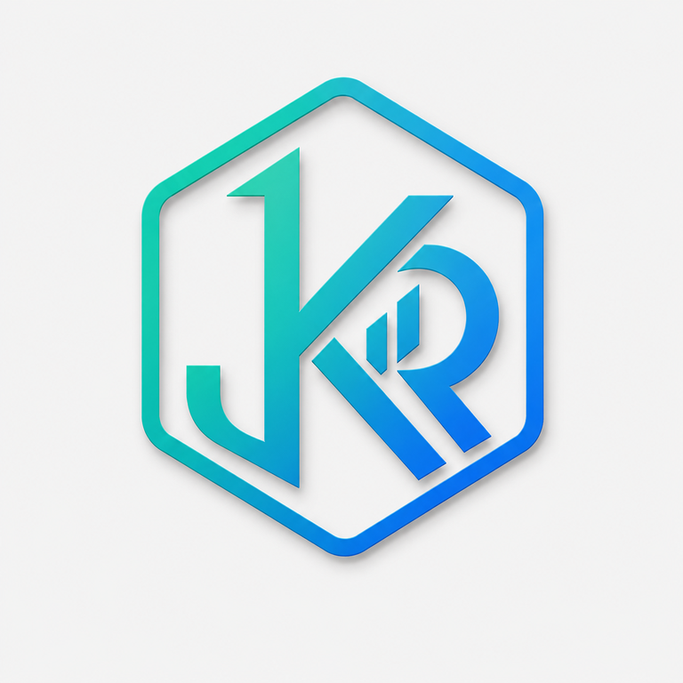
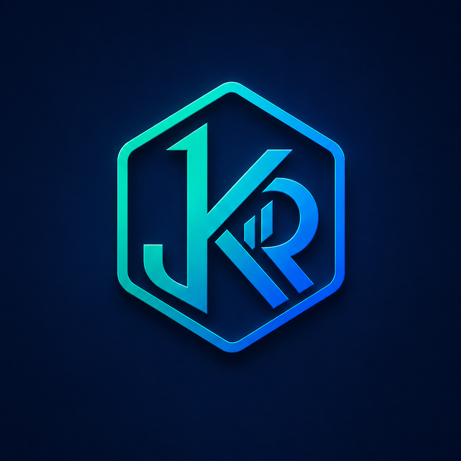

You are offline
The app shell is available, but cloud portfolio records require an internet connection. Reconnect and reopen the dashboard.
Try again

The app shell is available, but cloud portfolio records require an internet connection. Reconnect and reopen the dashboard.
Try again